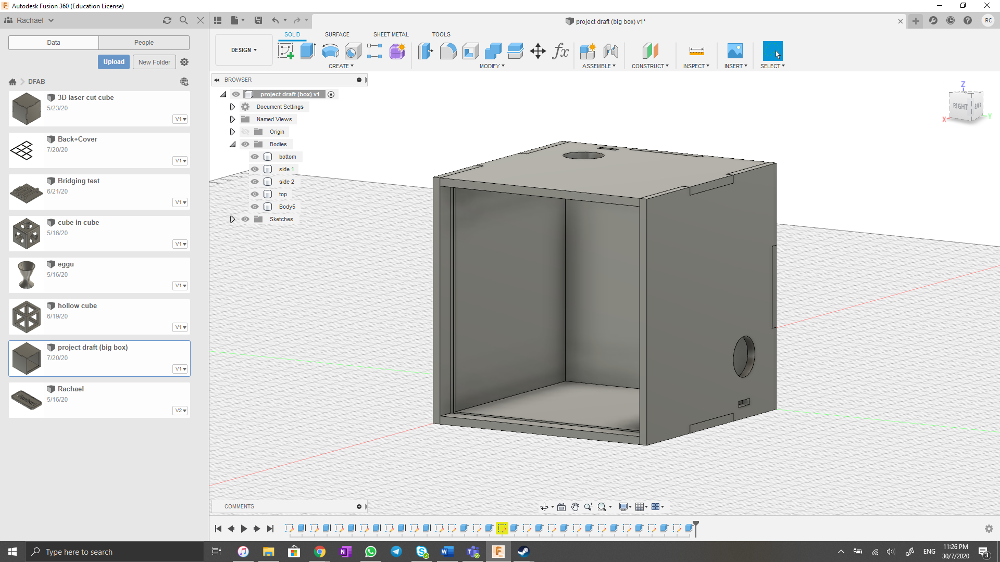
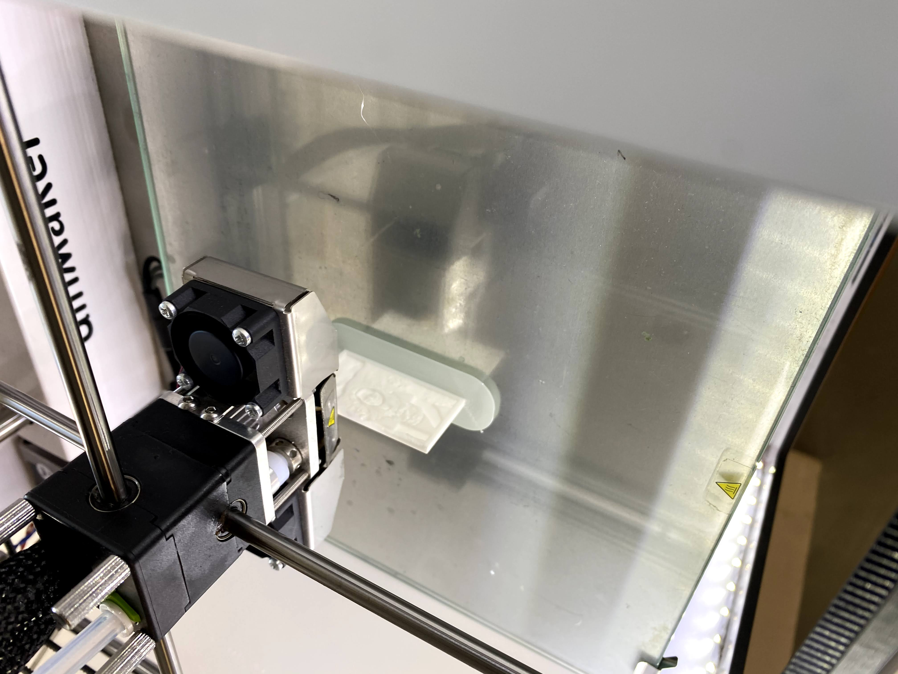

Planning, Brain Storming
Our final project is to be an individual project (due to COVID-19) which has to contain elements of what we have learnt throughout the term. Hence it needs to have parts that are 3D printed, Laser cut as well as embeded programming (Arduino).
As I am still very much a beginner, I want do a simple project that would be meaningful to me as something I would look back and tell myself that "Yes I did that".
I decided to go more of a decorative piece compared to a technical piece.
My idea is to makea colour changing lamp with photos surrounding it
I found out about Lithophane Pictures which could be done using a 3D printer and found that it was a really interesting way to process photographs. Essentially using different thickness which will allow different amount of light to pass through forming a photo. Hence my 3D printed aspect for my project will be lithophane.
As for the lamp, I would use the Arduino and programme it to either 1. Change with temperature or 2. change on a constant timing. If possible, I would like to connect the board to a battery power source instead of USB so that the whole piece is able to be portable or used in a remote location.
For Laser Cutting, I decided that the casing of the piece will be done using the laser cutter as it would take lesser time comapred to a 3D printer. Using the laser cutter will also allow me to engrave designs and words on the surface. The cubes will be done individually and joined together like a jig-saw piece.
Upon further thinking, the size of the bigger box (led lamp) has to be at least 10cm wide, smallest possible length.
 Project inspiration
Project inspirationUpon further thinking, I have concluded and gotten approval for the lamp project. To simplify, instead of doing 6 six boxes excluding the main box, I will scale down the project and only 3 boxes.
Instead of using the breadboard, I will solder the components directly connected to the Arduino to minimise the size of the structure.
As for the programming, I will stick to RGB LED with blink and choose the colours which will best match the image that is printed out

After a few test on the lithophane size, I decided to scale down the size of the project. The lithophanes will be 50mm by 50mm as one that size takes around 1 hour to print, hence a larger one will take alot of time to print out.
Bill of Materials
- Dupont cables
- RGB LEDx3 (frosted)
- Batter Connector (9V)
- button/switch - 1
CAD drawings
Main box
For the first draft, the cube is 60x60x60mm. Size will change depending on the clarity of the printed lithophanes. The holes at the top and side is placed for the RGB LED to go through. The small box will be used as a joint and a connecting pin will be cut out to join the two cubes together.
There are small groves at the front edge of the cube, that is to allow the lithophane some area to fit in (like a holder). I intend on engraving it in with the laser cutter.
Once the size of the whole structure is finalised and if time permits, I would like to engrave some designs on the side on the cube
I removed the removing the small grove at the front edge of the cube as the lithophane that I printed was samller than the box that was cut out.
The above drawing is for the smaller box which will contain the lithophane. The Side cubes will have the same design just the sides will change depending on where the LED will be inserted.
The cube is 60mm by 60mm. I realised that it was larger than the lithophane that was printed as the lithophane is 50mm by 50mm.
Container Box
The above is the drawing for the larger box which will contain the arduino and the battery. It has the same concept as the previous that it would fit together like jig-saw pieces. Its size is 120mm by 60mm
Laser Cutting
All the above designs for the boxes were to be laser cut. From the 3D model, I created sketch from each of the faces then saved it as a DXF file.
Below is the cutting process in the laser cutter as well as some of the pieces that were cut out.

3D Printing
The 3D printing aspect of my project is the Lithophane picture itself. I used a website which automatically helped me convert my photos to STL files.
Link to WebsiteThings to note when printing out Lithophanes, on the website, make sure that the image setting is a Positive image not Negative. The rest of the settings in the website itself can remain the same.
Now, on the slicer software, change the rotation of the print to vertical. It is advised to print out lithophanes vertically instead of flat on the bed. Make sure to turn on build plate adhesion as brim, turn on the cooling fan as well.
For the Ultimaker2+ I set the speed to 60mm/s and the layer height as 20mm. I printed without support and the quality was good, so for the further prints I did, I opted to print without support. The other settings I left it as it was.
I was lucky in my selection of setting as I could n ot find one that was recommended for Ultimaker2+. My first print was successful. My second print however, I changed the thickness of the whole modle to 2mm instead of 3mm, the image quality turned out to be worst than the first print, so I decided to stay with the dimensions of 50x50x3 mm as my dimensions for the lithophane.
The average printing time for my pictures were around 1 hour.
Fixing Up the Box
The wood pieces that were cut out for the box was too loose to fit together without any adhesieve. So the parts which did not need to be open (the main frame) were glued together using UHU glue.
As UHU glue dried transparent, I thought it would be a nice idea if I were to use the glue to hold up my picture in the box. The lithophane was 1cm smaller than the box, leaving a margin of 5mm at the edges between the photo and the box. I had an idea that I would use the glue to act as a border or a frame instead of 3D printing a frame to fit inbetween.
This resulted in a translucent border around the lithophane (can be seen from the photos above) which allowed light to pass through looking like a highlighted boarder around the lithophane. I am satisfied with the overall look which the glue gave as a boarder. Although I have to admit, viewing the lamp in day light, the glue work was not done neatly, making the overall aesthetic slightly shabby. However when turned on at night as intended, there is a nice boarder glow of light which compliments the lithophane.
Arduino
My setup for the Arduino circuit is really simple. It is a basic RGB LED Blink programme

I chose pink, blue and green as the main colours for the lithophanes (wite and rasberry being fillers colous) as I felt it well represents the 3 different pictures. Pink for the sakura flowers, blue for the waves and green for mt fuji.
Circuit design
As my design needed 3 LEDs at different positions, I wasnt very sure with how to wire up my circuit. I did was not able to use a bread board as the smallest sized bread board was not able to fit into the boxes. Hence I decided that I would solder the components directly to each other.
I first tried to link everything on a bread board first to test if my code works.
Once I was sure that my code worked, I started off with soldering a 180Ohm resistor to each of the RGB leg (except the anode)
After all 9 resistors were soldered on to the legs, I wanted to join all the colours (ie all 3 wires for red) into one pin as my code only requres 3 output pins, which are ~11 for reed, ~10 for green and ~9 for blue. Again I forgot to take picture so I drew the curcuit out.
The LEDs are then sloted into to their respective positions then I used electrical tape to keep it in place. (Ignore the messy glue work, it cant be seen)
The arduino is also connected to a 9V battery connector. Hence it can be both portable, operated by switch with the 9V battery or powered by the USB connection to a computer or a portable charger. I added a switch on the live wire of the battery pack, so then the switch is turned on, current will flow through making it a closed circuit, vice versa, when the switch it turned off, it is an opened circuit
Overall